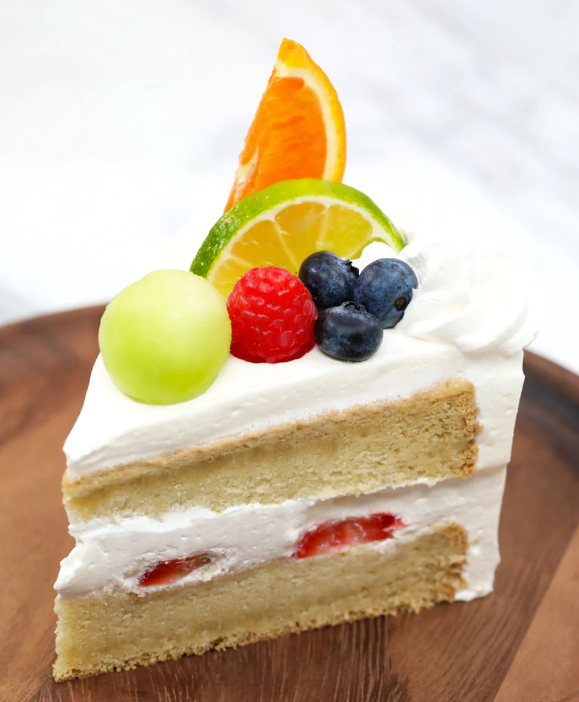

Hasty Fruitcake
This sugary treat boosts speed and happiness.

What You Will Need
- 2 cups flour
- 1 cup butter, melted
- 3 eggs
- 1 tablespoon baking powder
- 1 teaspoon salt
- 1 1/2 cups granulated white sugar (divided)
- Berries
- One quart heavy cream
- 2 teaspoons vanilla extract
- Other decorative fruits
- Pomegranate seeds (meant to reflect that essential TotK item, "fleet lotus seeds")
- Edible Flowers ("swift violet" will boost that sweet, sweet hasty bonus)
Directions
- Preheat your oven to 350 degrees Farenheit, and grease two 8-inch round cake tins (alternatively, one 9x13 casserole dish will serve well with adjusted bake time).
- Sift flour into a large mixing bowl and combine with salt and baking powder.
- In separate mixing bowl, combine 1 cup sugar, butter, and eggs, making sure to break up any clumps of sugar.
- Combine the dry ingredients with the wet mixture using a spatula, making sure not to overmix.
- Pour batter into cake tins (or whatever baking acoutrement you have on hand).
- Bake cake for 35-45 minutes, inserting a toothpick to check for doneness in the middle of your cake(s). If the toothpick comes out clean, it's done! If not, put her back in, she's still working on it.
- The real recipe in TotK doesn't require that much fruit. The illustration, howver, is slathered in cute fruit. Take this time to make your fruit cute so that you can shoot pics of your astute decorative skills without refute.
- Also take this time to whisk that heavy cream together with the reserved 1/2 cup of sugar and vanilla extract until your arm falls off and you have achieved creamy peaks. Alternatively, buy a can of whipped cream.
- That cake should be done now. Let it cool off. She had a hard day.
- Once the cake is ready to talk to you again, it will be eager to achieve its final form. Power it up with whipped cream in between your two layers (if you had two tins), top the top and side the sides with the rest of the cream, and go wild with that fruit. Nobody can stop you. You're too fast.
Back to the menu.
*full disclosure, I have not actually made this cake. This recipe is made up and could taste like a mistake.